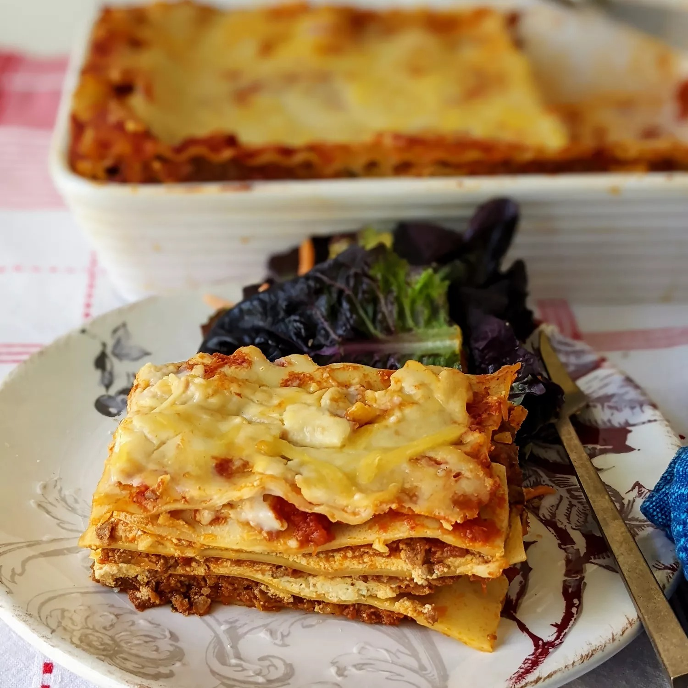

Lasagna recipe

Lasagna first made is a grand entrance in Naples, Italy during the Middle Ages in the 14th century. Initially, this dish was reserved for special events and holidays. Ironically, this pleasure inducing food was introduced to Italians in the middle of the Black Plague
ingredients
- meat
- onion
- tomatoes & herbs
- sugar
- spices and seasonings
- noodles
- cheese
- egg
steps
- cook the meat, Cook the ground meat in a skillet until browned and crumbly.
- cook the noodles, Boil the lasagna noodles in lightly salted water until they're al dente.
- make cheese layer, Mix cottage cheese, Parmesan cheese, eggs, the remaining parsley, the remaining salt, and pepper in a bowl
- assemble the lasagna, Layer the ingredients according to the recipe (starting with sauce and ending with mozzarella) until the lasagna is assembled
- bake the lasagna, Cover with foil and bake in the preheated oven for about half an hour. Remove the foil and continue baking until the top is golden brown